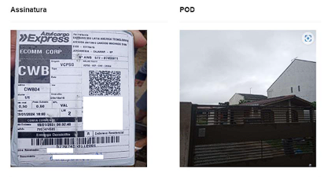

Introdução
O Toolkit de integrações da Azul Cargo, facilita a integração de novos parceiros que desejam realizar a entrega da mercadoria ao cliente final, realizando o processo de last mile.
Por aqui você irá conhecer como funciona o processo técnico para viabilizar essa integração, incluindo os modelos de arquivos que utilizamos em nossa plataforma, conhecerá quais as ocorrências precisamos receber em cada etapa da entrega, explicação dos retornos que enviaremos a vocês nas situações mapeadas e muito mais.
É muito importante que você entenda todos os passos aqui descritos para que, no final dessa jornada possamos realizar um teste efetivo de nossa integração.
Retorno da requisição
Todas as requisições concluídas, com sucesso ou erro, pelo Toolkit irão retornar um JSON de estrutura padronizada, independentemente do recurso que foi solicitado.
Códigos de retorno
Códigos de erro
Rotas
É a lista das cargas contemplando todos os AWB's a serem entregues por você.
O cadastro da rota é feito com o nome e CPF de um motorista que atenderá aquela rota. Caso você atenda mais de um destino, para cada destino é necessário informar o NOME e CPF de um motorista, pois as rotas serão integradas a partir desses dados.
Token e URL
Mesmo que você possua diversos CNPJ's de atendimento por região/localidade, o token e URL são únicos por parceiro, a diferenciação da localidade será feita pelos dados dos motoristas.
- Token: é chave de autenticação no ambiente na api do parceiro.
- URL (Post): endereço para onde serão enviadas as rotas no momento do teste. (Campo text na tela para usuario informar endpoint onde serão postadas as rotas)
O que é AWB
Código de rastreio da encomenda.
Formato:577 + 8 caracteres + enumerador do volume (exemplo: 577123456780001, 577123456780002).
Etiqueta AWB
A etiqueta é a identificação daquela encomenda. Nela contém o código de barras com as informações necessárias para identificação e baixa da entrega.
O que é BAG
É uma consolidação de várias cargas, seja em sacas, cages, gayloards, caixas e etc.
Tipo de BAG
BAG CONSOLIDADA (MILKRUN): Nesse modelo o cliente da Azul envia as encomendas já consolidadas em caixas ou sacas, e, portanto, não é necessário realizar nenhum processo de “quebra ou desconsolidação", neste caso toda movimentação da carga e alocação em rota de entrega deve ser feita bipando a numeração da etiqueta colada na carga, que no caso é etiqueta da BAG.
Etiqueta BAG
A etiqueta é a identificação daquela encomenda. Nela contém o código de barras com as informações necessárias para identificação e baixa da entrega.
Ocorrências
O que é uma ocorrência?
São eventos que permitem realizar o rastreamento da encomenda a partir do momento em que ela sai da base de destino.
É OBRIGATÓRIO o envio das ocorrências a partir do momento em que o motorista sai da base com o pacote.
Envio de Ocorrências
É o processo em que a transportadora envia à Azul notificações do processo de entrega de cada AWB. O retorno da requisição irá fornecer uma lista com o serviços contemplados de acordo com a localização do destinatário.
POSTEndPoint para Finalização de Entrega
https://hmg-ediapi.onlineapp.com.br/lastmile/api/ocorrencias/FinalizarEntrega?token=ea1d4ebf-13ac-40c7-877b-d002d9e706a3
POSTEndPoint para uma Ocorrência
https://hmg-ediapi.onlineapp.com.br/lastmile/api/ocorrencias/EnviarOcorrencia?token=ea1d4ebf-13ac-40c7-877b-d002d9e706a3
Finalização
É a conclusão do processo de entrega com sucesso.
IMPORTANTE: na finalização, é imprescindível o envio da imagem da assinatura, seja da etiqueta ou do app com as informações do recebedor: assinatura do recebedor, número do documento do recebedor e data da entrega.
POSTRecebimento Finalização
Envio de imagens
No momento da entrega, além do registro da ocorrência, o motorista deve anexar as fotos descritas abaixo:
POD - IMAGEM OBRIGATÓRIA EM TODAS AS OCORRÊNCIAS* (entrega com sucesso ou insucesso): Foto da fachada do local da entrega.
ASSINATURA – IMAGEM OBRIGATÓRIA NA OCORRÊNCIA DE FINALIZAÇÃO (entrega com sucesso): Foto da etiqueta contendo assinatura do recebedor, número do documento do recebedor e data da entrega. Esta foto pode ser da etiqueta da Azul, ou direto do APP de entrega, incluindo as informações obrigatórias descritas acima.
O envio das ocorrências e registro das imagens devem ser realizados on time, quando o motorista está entregando a carga.
IMPORTANTE: NÃO É PERMITIDO IMAGENS ALEATÓRIAS OU COM BAIXA RESOLUÇÃO, CORTADAS, COM PREENCHIMENTO PARCIAL etc. O não cumprimento dessa obrigatoriedade pode ocasionar em penalidades a empresa responsável pela entrega em caso de acareação** por desconhecimento do recebedor.
* Exceto para a ocorrência 133 - Saiu para entrega
** Acareação: quando o cliente solicita evidências de que a carga foi entregue ao destinatário incorreto.
Modelo das imagens
Faça um teste você mesmo
Após realizar os desenvolvimentos aderentes aos padrões da Azul, você está apto para fazer o teste de recebimento de rotas conforme abaixo.
Ao concluir todos os passos anteriores, você deve notificar aos times Azul no e-mail integracao.lastmile@voeazul.com.br evidenciando o sucesso obtido em cada etapa acima descrita.
Recebendo as evidências agendaremos uma reunião para validarmos se tudo ocorreu como esperado, e enfim iniciarmos o processo de envio das encomendas com vocês.
Até mais.
...